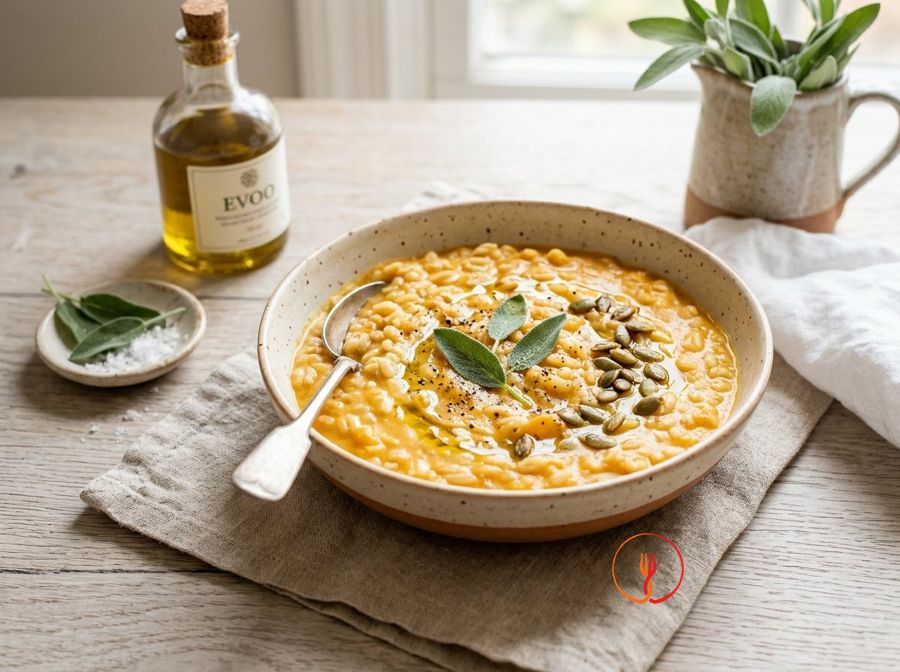

Orzo Perlato Morbido con Crema di Zucca e Patate
L'orzo cotto a lungo diventa tenero e piacevole. Abbinato alla zucca crea un primo piatto dolce e rassicurante, perfetto per l'autunno.
Questo primo piatto unisce la consistenza rustica dell'orzo perlato alla cremosità dolce della zucca Mantovana e delle patate. È una preparazione avvolgente, ideale per le giornate autunnali e dal gusto naturalmente equilibrato.
Ingredienti
- Orzo perlato140 g
- Zucca pulita (tipo mantovana)300 g
- Patata100 g
- Olio extravergine d'oliva20 ml
- Salvia1 foglia
Allergeni
Glutine
Procedimento
- Inizia preparando i vegetali: lava e sbuccia 100 g di patata e 300 g di zucca Mantovana, poi tagliali a cubetti uniformi di circa 1 cm utilizzando un coltello da chef ben affilato. La dimensione ridotta è fondamentale perché le verdure dovranno disfarsi quasi completamente durante la cottura per creare la base cremosa. Disponi i cubetti su un tagliere assicurandoti che siano di grandezza simile per garantire una cottura omogenea. Il consiglio dello chef: non preoccuparti se i cubetti non sono esteticamente perfetti, poiché verranno schiacciati, ma cerca di non farli troppo grandi o l'orzo cuocerà prima che le verdure siano tenere.
- Prendi 140 g di orzo perlato e sciacqualo accuratamente sotto acqua fredda corrente utilizzando un colino a maglie fitte. Muovi i chicchi con le dita finché l'acqua che scola non risulterà perfettamente limpida, eliminando così le impurità e l'eccesso di amido superficiale. Questo passaggio permette di ottenere un piatto finale cremoso ma non colloso, mantenendo il chicco ben definito. Il consiglio dello chef: il lavaggio dell'orzo riduce anche la formazione di schiuma durante il bollore, rendendo la cottura più pulita e controllata.
- Inserisci in una pentola capiente dal fondo spesso i cubetti di zucca e patata insieme all'orzo risciacquato e a una foglia di salvia fresca. Non aggiungere ancora grassi o sale, poiché vogliamo che le fibre delle verdure si ammorbidiscano dolcemente a contatto con l'acqua. Mescola brevemente con un cucchiaio di legno per distribuire gli ingredienti in modo uniforme sul fondo della pentola. Il consiglio dello chef: l'uso di una pentola dal fondo pesante è ideale per diffondere il calore costantemente e prevenire che l'orzo si attacchi sul fondo durante i lunghi tempi di cottura.
- Versa nella pentola circa un litro d'acqua fredda, assicurandoti che superi di diverse dita il livello degli ingredienti. Accendi il fuoco a intensità vivace e porta a bollore; l'uso dell'acqua fredda permette una fuoriuscita graduale dei sapori e degli zuccheri naturali della zucca e della patata. Non appena l'acqua inizia a bollire, noterai i primi profumi della salvia che si sprigionano nell'aria. Il consiglio dello chef: se desideri un sapore più intenso, puoi sostituire l'acqua con un brodo vegetale leggero, ma l'acqua semplice permette di esaltare la dolcezza naturale della zucca Mantovana.
- Riduci la fiamma al minimo, copri parzialmente con un coperchio e lascia cuocere dolcemente per circa 35-40 minuti. Durante questo tempo, l'orzo assorbirà il liquido gonfiandosi gradualmente, mentre le verdure diventeranno estremamente tenere, quasi sfatte. Controlla di tanto in tanto la densità: il risultato deve essere una zuppa molto densa, con l'orzo che ha raddoppiato il suo volume iniziale. Il consiglio dello chef: tieni vicino un pentolino con dell'acqua calda; se vedi che il liquido si asciuga troppo velocemente prima che l'orzo sia cotto, aggiungine un mestolo alla volta.
- Una volta trascorsi i 40 minuti, spegni il fuoco e rimuovi la foglia di salvia con una pinza da cucina. Utilizza una forchetta o uno schiacciapatate direttamente dentro la pentola per premere i pezzi di zucca e patata ancora visibili contro i bordi o sul fondo. Questa operazione trasformerà istantaneamente il fondo di cottura in una crema vellutata che avvolgerà i chicchi di orzo. Il consiglio dello chef: schiaccia con decisione ma cerca di non rompere i chicchi di orzo, che devono rimanere integri per dare una piacevole consistenza masticabile al piatto.
- Mescola energicamente il composto con un cucchiaio di legno per un minuto, simulando la 'mantecatura' tipica del risotto. Questo movimento meccanico favorisce il rilascio degli ultimi amidi e l'unione perfetta tra la purea di verdure e il cereale, portando la consistenza a una densità 'all'onda'. Il profumo sarà ormai intenso e il colore di un arancione caldo e invitante. Il consiglio dello chef: se la consistenza ti sembra troppo asciutta, aggiungi un goccio d'acqua calda proprio in questa fase per ottenere la cremosità desiderata.
- Completa il piatto aggiungendo i 20 ml di olio extravergine d'oliva a crudo e mescolando un'ultima volta per emulsionare il tutto. L'olio aggiunto fuori dal fuoco manterrà intatte le sue proprietà organolettiche e donerà una lucentezza dorata alla crema. Servi il piatto tiepido in fondine capienti, lasciando che riposi un minuto prima di consumarlo. Il consiglio dello chef: un pizzico di pepe nero macinato al momento sopra ogni porzione esalterà magnificamente la dolcezza della zucca e della patata senza coprirne il sapore delicato.
Consigli
- Sciacqua bene l'orzo sotto l'acqua corrente per eliminare le impurità prima della cottura.
- Taglia zucca e patate in cubetti piccoli e uniformi per garantire una cottura omogenea.
- Se la crema dovesse addensarsi troppo, aggiungi poca acqua calda alla fine.
Varianti
- Aggiungi un rametto di rosmarino durante la cottura per un profumo più intenso.
- Sostituisci la zucca con della carota per una versione dal colore e sapore altrettanto vivaci.
Valori nutrizionali (stima)
| Per porzione (270 g) | Per 100 g | |
|---|---|---|
| Energia | 845 kJ / 202 kcal | 313 kJ / 75 kcal |
| Proteine | 4.8 g | 1.8 g |
| Carboidrati | 33.1 g | 12.3 g |
| di cui zuccheri | 3.6 g | 1.3 g |
| Grassi | 4.9 g | 1.8 g |
| di cui saturi | 0.7 g | 0.3 g |
| Fibre | 6.4 g | 2.4 g |
| Sale | 0.02 g | 0.0 g |
Valori stimati con l'AI su dati medi CREA / USDA: sono indicativi e non sostituiscono il parere di un medico o di un nutrizionista.
Apri la ricetta nell'app per la lista della spesa, le schede ingredienti e i negozi vicini.